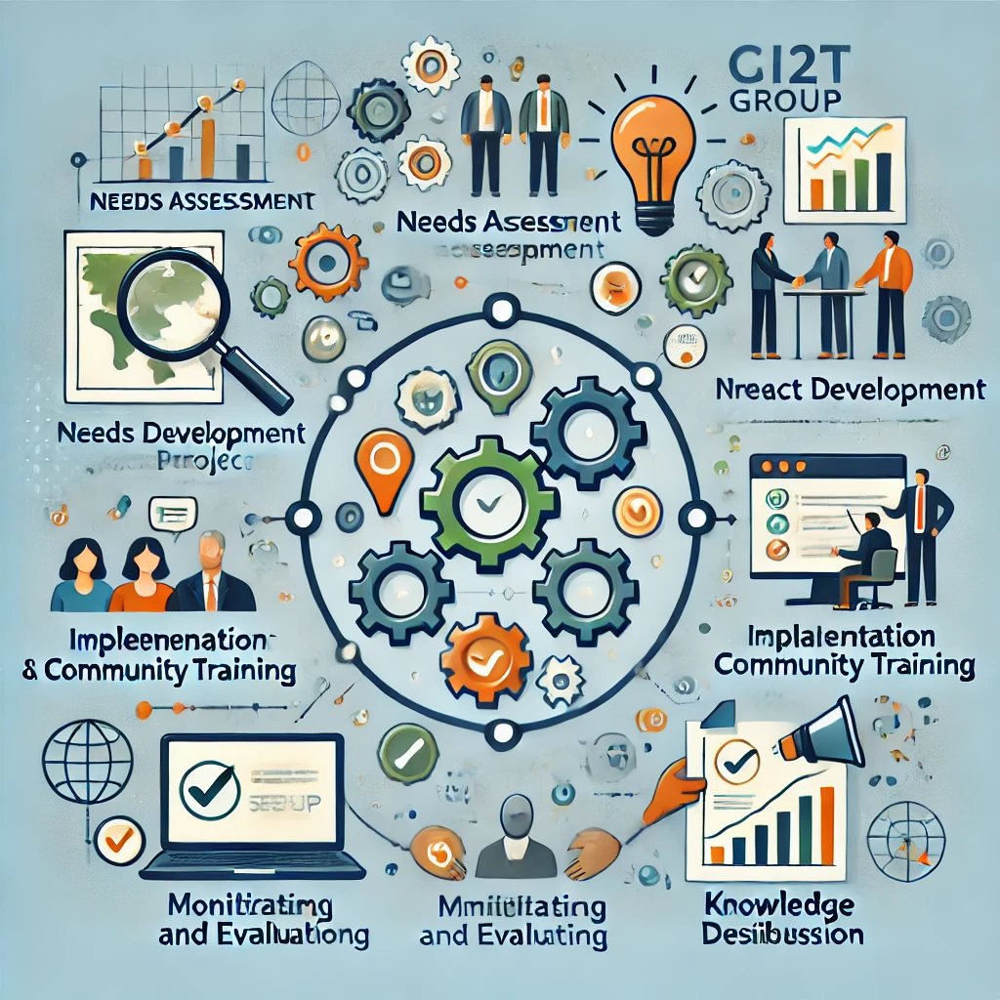

Inovacion tecnologica.
El Grupo de Investigación GI2T tiene como propósito contribuir en la construcción de conocimiento para responder a las necesidades y oportunidades de las comunidades asentadas en el litoral pacífico a través de la innovación. Nuestro enfoque se centra en promover el acceso, uso y apropiación tecnológica como herramientas fundamentales para impulsar el desarrollo sostenible de esta región.
Nuestro grupo de investigación trabaja en tres ejes temáticos esenciales: el uso apropiado e innovador de la tecnología en los sectores turístico, educativo y de seguridad alimentaria. A través de estudios y proyectos de investigación, buscamos generar soluciones concretas y aplicables que beneficien a las comunidades locales y contribuyan a su crecimiento económico y social.
Nos comprometemos con el fortalecimiento de la infraestructura de nuestro grupo, promoviendo alianzas estratégicas y la creación de laboratorios especializados para llevar a cabo investigaciones relevantes y de impacto. Además, trabajamos en enriquecer nuestra base de conocimiento y experiencia, fundamentales para el desarrollo de proyectos innovadores y sostenibles.
Buscamos posicionar nuestro grupo de investigación a nivel nacional e internacional a través de la divulgación de nuestras investigaciones, la participación en eventos académicos relevantes y la organización de encuentros con especialistas y expertos en tecnología y desarrollo comunitario.
Te invitamos a unirte a nuestro grupo y ser parte de esta apasionante labor en la que juntos, a través del acceso, uso y apropiación tecnológica, contribuimos al desarrollo integral de las comunidades asentadas en el litoral pacífico colombiano, generando un impacto positivo y sostenible en la región.
El objetivo general del Grupo de Investigación GI2T es contribuir al desarrollo integral y sostenible de las comunidades asentadas en el litoral pacífico colombiano a través del acceso, uso y apropiación tecnológica, promoviendo la innovación y generando soluciones concretas que impulsen el progreso económico, social y cultural de la región.
1. Realizar estudios e investigaciones que identifiquen las necesidades tecnológicas y oportunidades de desarrollo en los sectores turístico, educativo y de seguridad alimentaria del litoral pacífico colombiano.
2. Promover el acceso a la tecnología en las comunidades locales, facilitando la disponibilidad y utilización de herramientas digitales que potencien sus capacidades y conocimientos.
3. Fomentar la apropiación tecnológica en las comunidades, brindando capacitación y formación en el uso adecuado de las tecnologías para mejorar sus actividades productivas, educativas y de vida cotidiana.
4. Desarrollar proyectos innovadores que incorporen tecnologías adecuadas para resolver problemáticas específicas en el turismo, educación y seguridad alimentaria de la región.
5. Establecer alianzas estratégicas con actores locales, instituciones educativas, organismos gubernamentales y empresas privadas para potenciar el impacto de nuestras iniciativas y proyectos.
6. Divulgar los resultados de nuestras investigaciones y experiencias en eventos académicos y medios de comunicación, con el objetivo de generar conocimiento y sensibilizar sobre la importancia de la tecnología para el desarrollo regional.
7. Formar una red de colaboradores y aliados interesados en el desarrollo del litoral pacífico, con el fin de fortalecer la capacidad de trabajo conjunto y ampliar el alcance de nuestras acciones.
8. Evaluar constantemente el impacto de nuestras intervenciones y proyectos en las comunidades, con el propósito de retroalimentar nuestras acciones y mejorar continuamente nuestros enfoques y resultados.
9. Desarrollar programas de extensión y transferencia tecnológica que permitan la replicación de buenas prácticas y soluciones exitosas en otras comunidades del litoral pacífico colombiano.
10. Contribuir al debate y formulación de políticas públicas que promuevan el acceso equitativo a la tecnología y la innovación como herramientas para el desarrollo inclusivo y sostenible del litoral pacífico colombiano.
Diagnóstico de necesidades y oportunidades:
o Recolección de información primaria: A través de talleres, entrevistas y encuestas, se identifican las necesidades tecnológicas y las oportunidades en los sectores de turismo, educación y seguridad alimentaria. o Investigación documental: Se recopila y analiza información previa sobre la región para tener una base sólida de conocimiento local y contextual.
Articulos
Implementación y capacitación comunitaria
o Talleres de formación y capacitación: Se organizan talleres para capacitar a las comunidades en el uso adecuado de las tecnologías diseñadas. La formación se centra en el uso práctico de las herramientas tecnológicas para mejorar la productividad en los sectores turístico, educativo y alimentario. o Acompañamiento técnico: Se ofrece asistencia técnica continua para garantizar que las comunidades logren una apropiación efectiva de las tecnologías.
Creación de plataformas digitales para promover el turismo sostenible en las comunidades del litoral pacífico, lo que ha incrementado la visibilidad y el número de visitantes a las áreas beneficiadas. Implementación de programas de educación a distancia que utilizan tecnologías digitales adaptadas a las necesidades de las comunidades rurales, mejorando el acceso a la educación en áreas remotas. Desarrollo de sistemas tecnológicos de gestión para la seguridad alimentaria, que han optimizado los procesos de producción y distribución de alimentos en las comunidades.
Capacitación de más de 500 personas en el uso de herramientas tecnológicas que mejoran sus actividades productivas y su calidad de vida, fomentando una cultura de apropiación tecnológica en la región. Incremento en el uso de tecnologías digitales en actividades cotidianas como la agricultura, la pesca y el comercio, lo que ha generado mejoras en la eficiencia y productividad de estos sectores.
Establecimiento de convenios con instituciones educativas y organizaciones internacionales, lo que ha permitido la financiación y sostenibilidad de proyectos a largo plazo. Creación de una red de colaboradores a nivel nacional e internacional, que ha fortalecido el intercambio de conocimientos y el desarrollo de proyectos conjuntos.
Presentación de investigaciones en eventos académicos nacionales e internacionales, logrando reconocimiento en el campo de la tecnología para el desarrollo comunitario. Publicación de artículos en revistas científicas sobre los impactos de las tecnologías en las comunidades del litoral pacífico, lo que ha generado un mayor interés y colaboración en la región.
Se han aplicado un total de 150 instrumentos de recolección de datos en las comunidades, que incluyen encuestas, entrevistas y cuestionarios adaptados a las necesidades de los sectores turístico, educativo y de seguridad alimentaria.
Se ha realizado la evaluación en 30 instituciones educativas y 10 organizaciones del sector turístico, incluyendo cooperativas locales y grupos de productores agrícolas, con el fin de identificar las necesidades tecnológicas.
A lo largo del proyecto, se han llevado a cabo 5 ciclos de levantamiento de datos en diferentes periodos, lo que ha permitido un seguimiento continuo de las intervenciones y un ajuste de las estrategias según los resultados obtenidos.
Estas son algunas personas que han contribuido a la creación de este proyecto.